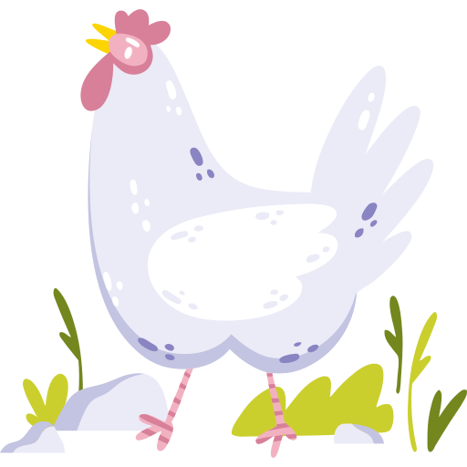
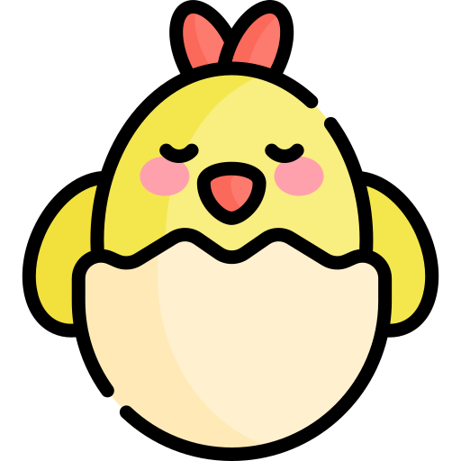
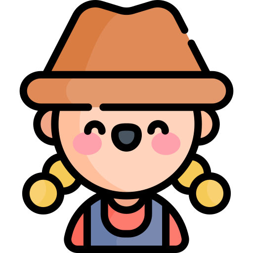
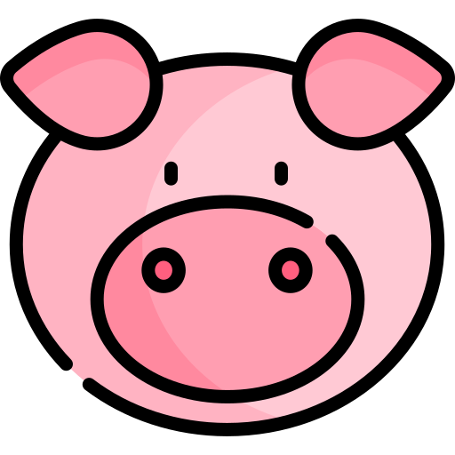

Shooting Gallery:
Farm Apocalypse

Farm Apocalypse
Если кто-то уже знаком с шедевром игрового мира - игрой Crazy Chicken,
то он без труда узнает что это легенда гейминга. А для тех, кто не в
курсе – разъясняем. Игровой процесс этой игры заключается в уничтожении
поочередными выстрелами своими солдатами-цыплятами команды противника
Если кто-то уже знаком с шедевром игрового мира - игрой Crazy Chicken, то он без труда узнает что это легенда гейминга. А для тех, кто не в курсе – разъясняем. Игровой процесс этой игры заключается в уничтожении поочередными выстрелами своими солдатами-цыплятами команды противника
Главные приемущества игры:
Если кто-то уже знаком с шедевром игрового мира - игрой Crazy Chicken, то он без труда узнает что это легенда гейминга. А для тех, кто не в курсе – разъясняем. Игровой процесс этой игры заключается в уничтожении поочередными выстрелами своими солдатами-цыплятами команды противника
Главные приемущества игры:
- jkjljljljdlhskchs
- nnkhkkuh
- nnkhkkuh
- nnkhkkuh

Высокая реалистичность
Высокая реалистичность

Полное погружение
Полное погружение

Ни одна зверушка не пострадала
Ни одна зверушка не пострадала